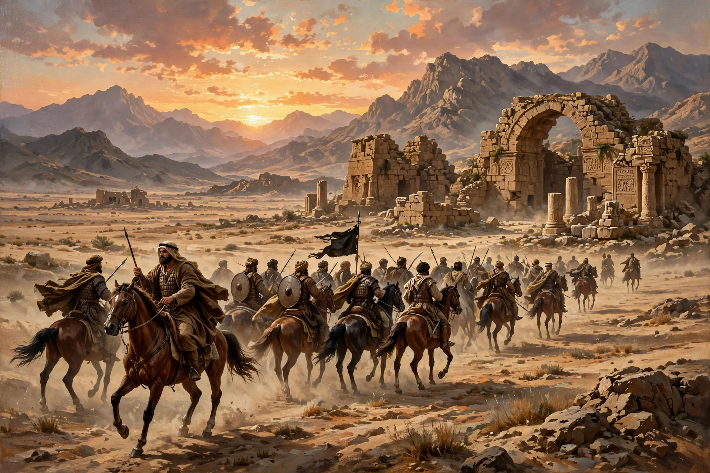

The Muslim conquest of Persia, also known as the Arab conquest of Iran, was carried out by the Rashidun Caliphate from 633 to 654 AD and led to the fall of the Sasanian Empire and the eventual decline of Zoroastrianism in Iran, although Persian culture and language survived and profoundly shaped the Islamic world.

| Date | 633–654 AD |
|---|---|
| Location | Mesopotamia, Persia, Transoxiana |
| Result | Rashidun victory; fall of the Sasanian Empire |
| Belligerents | Rashidun Caliphate; Sasanian Empire |
| Commanders | Khalid ibn al-Walid, Sa'd ibn Abi Waqqas; Yazdegerd III, Rostam Farrokhzad |
Persia and Byzantium had been exhausted by the Byzantine–Sasanian War of 602–628. After Muhammad's death, Abu Bakr unified Arabia and his successors directed expansion outward. Under Caliph Umar, Muslim armies invaded Mesopotamia in 633 under Khalid ibn al-Walid.
The decisive Battle of al-Qadisiyyah (636) broke Sasanian resistance in Iraq; Ctesiphon fell in 637. The Battle of Jalula secured Iraq, and the Battle of Nahavand (642) — called the 'Victory of Victories' — opened the Iranian plateau. Isfahan, Persepolis region, Ray, Hamadan and Azerbaijan were taken over the following years. The last shah, Yazdegerd III, fled east and was killed near Merv in 651, traditionally by a miller. Resistance and revolts continued in Tabaristan and the east for decades.
Conversion to Islam was gradual over centuries. Persian administrators, language and culture persisted; Persian (in Arabic script) re-emerged, and under dynasties such as the Samanids, Persian Islamic culture flourished. Zoroastrians became a protected but taxed minority (dhimmi), and many emigrated to India as Parsis.